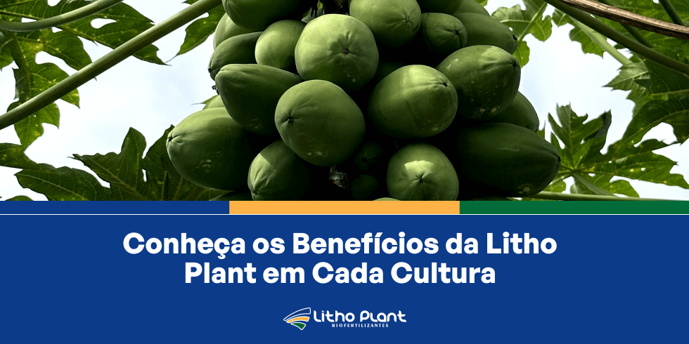
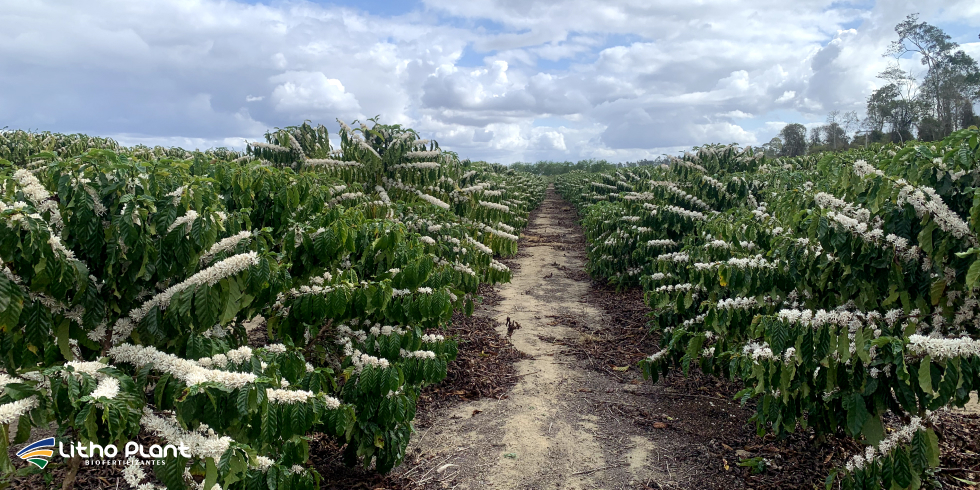

Conheça os Benefícios da Litho Plant

Com mais de 18 anos de atuação, a Litho Plant se consolidou como parceira estratégica de produtores em todo o Brasil.A Litho Plant, uma indústria de biofertilizantes em Linhares, tem se destacado no mercado agrícola brasileiro por oferecer produtos de alta qualidade que impulsionam a produtividade e a saúde das lavouras.
Com uma trajetória de 18 anos, a Litho Plant se consolidou como parceira confiável para agricultores em todo o país, fornecendo soluções inovadoras que combinam tecnologia de ponta com práticas sustentáveis.
Neste artigo, vamos explorar os diversos benefícios que a Litho Plant oferece, com foco especial em produtos como biofertilizantes, protetor solar para plantas e o Sombryt, que ajudam a prevenir a escaldadura nas culturas.
Continue lendo para descobrir como os produtos da Litho Plant podem transformar suas práticas agrícolas.
A importância dos biofertilizantes na agricultura
Os biofertilizantes têm se tornado cada vez mais populares entre agricultores que buscam alternativas sustentáveis e eficazes para melhorar a produtividade das lavouras.
Esses produtos, como os desenvolvidos pela indústria de biofertilizantes em Linhares, são formulados a partir de microrganismos benéficos e matérias-primas orgânicas, que ajudam a melhorar a fertilidade do solo e a saúde das plantas.
A utilização de biofertilizantes traz vantagens como melhoria da estrutura do solo, maior retenção de água e promoção de raízes mais saudáveis.
Além disso, os biofertilizantes da Litho Plant são projetados para serem compatíveis com uma ampla gama de culturas, oferecendo solução versátil e adaptável às necessidades de diferentes tipos de plantio.
Estudos conduzidos no Brasil mostram que o uso de biofertilizantes pode resultar em aumento significativo na produtividade das culturas e redução da dependência de fertilizantes químicos, com benefícios econômicos e ambientais para o produtor.
Com os biofertilizantes da Litho Plant, os agricultores podem esperar melhoria da qualidade do solo e colheitas mais abundantes e saudáveis.
 Biofertilizantes Litho Plant revitalizam o solo, aumentam a atividade biológica e favorecem sistemas produtivos mais resilientes.
Biofertilizantes Litho Plant revitalizam o solo, aumentam a atividade biológica e favorecem sistemas produtivos mais resilientes.
Protetor solar para plantas: protegendo suas culturas do sol
A escaldadura é um dos problemas mais comuns enfrentados por agricultores, especialmente em regiões de alta exposição solar.
Ela ocorre quando frutos e folhas são expostos a excesso de radiação solar, resultando em queimaduras que comprometem qualidade e produtividade.
Para combater esse problema, a Litho Plant desenvolveu protetor solar para plantas, solução eficaz que protege as culturas contra danos causados pelo sol.
O protetor solar da Litho Plant, como o Sombryt, é formulado para criar uma barreira protetora sobre folhas e frutos, refletindo parte da radiação solar e prevenindo a escaldadura.
Isso é especialmente importante em culturas como uva, maçã e tomate, que são mais sensíveis aos danos do excesso de sol.
A aplicação regular do Sombryt ajuda a manter a integridade das plantas e permite que realizem a fotossíntese de forma eficiente, mesmo sob alta exposição solar.
Pesquisas apontam que o uso de protetores solares para plantas reduz significativamente a incidência de escaldadura, resultando em colheitas de maior qualidade e valor comercial, sem interferir nas demais práticas de manejo.
Sombryt: a solução ideal contra a escaldadura
O Sombryt, desenvolvido pela indústria de biofertilizantes em Linhares, é um dos produtos mais inovadores da Litho Plant.
Esse protetor solar para plantas foi criado especificamente para proteger as culturas contra os efeitos prejudiciais da radiação solar, prevenindo a escaldadura e garantindo que frutos e folhas mantenham sua qualidade e valor nutricional.
O Sombryt é aplicado diretamente sobre as plantas, formando uma camada protetora que reduz a intensidade da radiação UV que atinge folhas e frutos.
Isso é crucial para manter a saúde das plantas em climas quentes e ensolarados, onde a escaldadura pode representar ameaça importante à produtividade.
Além de prevenir a escaldadura, o Sombryt também melhora a resistência das plantas ao estresse térmico, ajudando-as a manter o crescimento e o desenvolvimento mesmo em condições adversas.
Estudos indicam que plantas tratadas com Sombryt apresentam maior taxa de sobrevivência e frutos de melhor qualidade em comparação com áreas sem proteção.

Sombryt reduz danos por escaldadura e ajuda a preservar a aparência e o valor comercial dos frutos.Compromisso da Litho Plant com a sustentabilidade
A Litho Plant não apenas oferece produtos eficazes, como biofertilizantes e protetor solar para plantas, mas também mantém forte compromisso com a sustentabilidade ambiental.
Desde sua fundação, a empresa adota abordagem holística da produção agrícola, buscando equilibrar produtividade das lavouras e preservação do meio ambiente.
A Litho Plant adota práticas responsáveis de produção e distribuição, minimizando o impacto ambiental em todas as etapas.
A empresa implementa processos industriais que reduzem desperdícios e priorizam reciclagem de subprodutos sempre que possível.
O foco em matérias-primas renováveis vem acompanhado de investimentos em tecnologias que promovem eficiência energética e redução de emissões de carbono.
A Litho Plant está continuamente em busca de novas maneiras de diminuir sua pegada de carbono, adotando tecnologias limpas e processos inovadores que minimizam o uso de energia e a geração de resíduos.
Outro pilar do compromisso com a sustentabilidade é o investimento constante em pesquisa e desenvolvimento, voltado a soluções que entreguem resultados no campo sem comprometer o futuro dos sistemas produtivos.
A empresa acredita que a sustentabilidade não é apenas uma opção, mas uma necessidade para o futuro da agricultura, e trabalha para que seus produtos beneficiem tanto os agricultores quanto o meio ambiente.
Ao investir em tecnologias e práticas que favoreçam a sustentabilidade, a Litho Plant ajuda a construir um futuro mais verde para a agricultura no Brasil e no mundo.
Conclusão
A Litho Plant se estabeleceu como uma das principais fornecedoras de biofertilizantes, protetor solar para plantas e soluções agrícolas inovadoras no Brasil.
Com produtos como o Sombryt, a empresa ajuda agricultores a proteger suas culturas contra a escaldadura e a melhorar a produtividade de forma sustentável.
Desenvolvida com base em pesquisas e anos de experiência, a linha de produtos Litho Plant oferece benefícios que vão da melhoria da saúde do solo à proteção contra danos causados pelo sol.
Se você quer saber mais sobre os produtos Litho Plant e como eles podem beneficiar suas práticas agrícolas, entre em contato com a empresa.
A equipe está pronta para fornecer informações e ajudar a escolher as melhores soluções para sua realidade de campo. Solicite um orçamento e descubra como a Litho Plant pode transformar sua produção, garantindo colheitas mais saudáveis e produtivas.